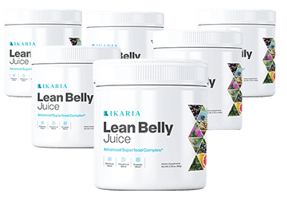

ORDER TODAY AND SAVE UP TO $780!
ORDER TODAY AND SAVE UP TO $780!
SAVE OVER 75%!
Ikaria Lean belly juice™ is a unique weight-loss supplement that helps users lose weight and reduce belly fat. Ikaria Lean belly juice's primary goal is to reduce stubborn belly fat and balance the body's uric acid.
The Formula is Easy to Take Each Day, and it Only Uses. Natural Ingredients, to Get the Desired Effect
Regular Price: $179/per bottle
Only for: $39/bottle
HURRY UP!